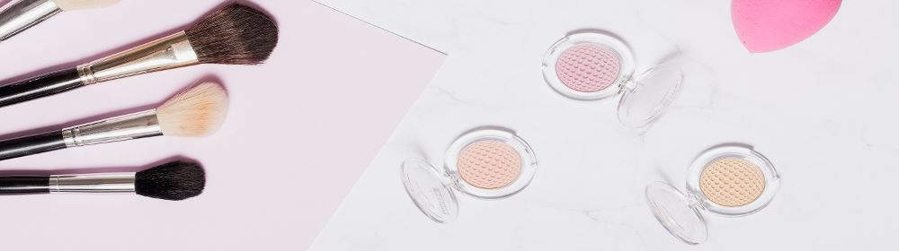
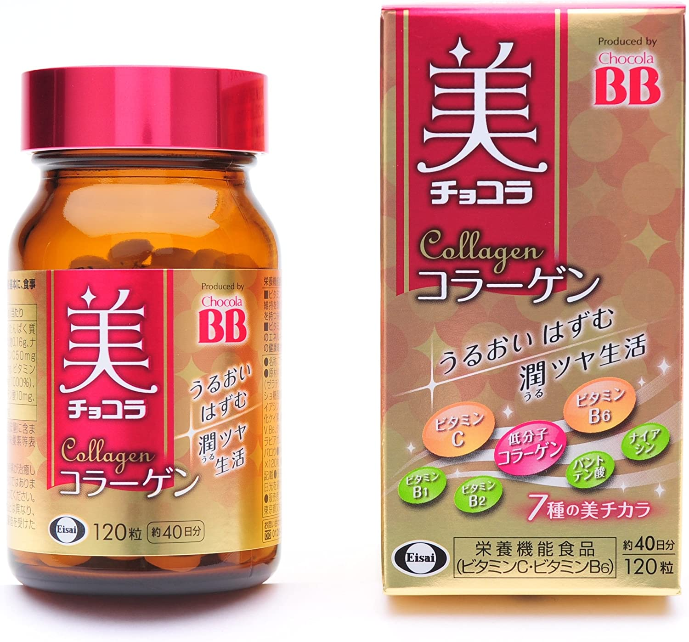
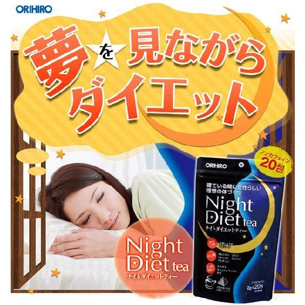
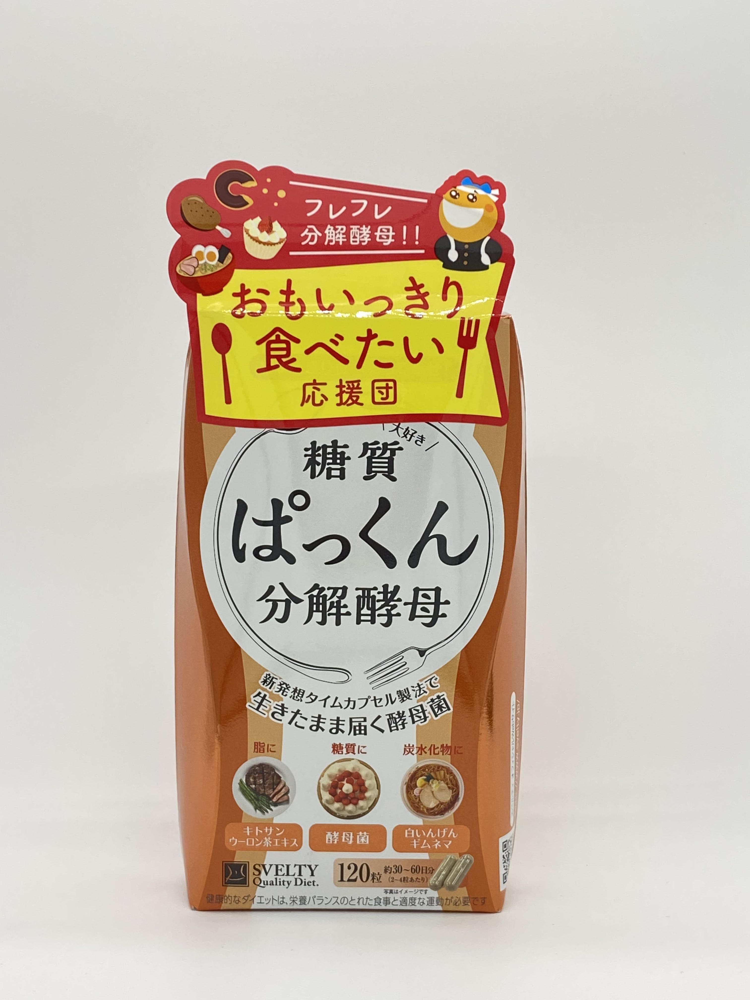

Mizukishop
>Home
Đăng nhập

Sản phẩm
Sản phẩm skincare
Thưc phẩm chức năng
Sản phầm dưỡng thể
Máy làm đẹp
Mỹ phẩm trang điểm
Dinh dưỡng cho bé
Sách dạy làm đẹp

10 loại Collagen dạng uống được yêu thích nhất trên tạp chí mỹ phẩm ＠Cosme Nhật Bản
＠Cosme - chuyên trang hàng đầu về mỹ phẩm và làm đẹp của Nhật Bản mới đây đã giới thiệu 10 loại collagen dạng uống được phụ nữ Nhật Bản yêu thích nhất. Nếu bạn cũng muốn sở hữu một làn da tươi trẻ, trắng sáng và mịn màng như phụ nữ Nhật thì có thể tham khảo danh sách 10 sản phẩm dưới đây.

TOP 4 trà giảm cân hiệu quả của Nhật Bản bán chạy nhất
Trà giảm cân là một phương pháp lành mạnh, có thể dùng lâu dài giúp cải thiện và duy trì vóc dáng được nhiều chị em phụ nữ lựa chọn. Tuy nhiên, hiện nay có quá nhiều sản phẩm, nếu bạn chưa biết nên uống trà giảm cân nào thì hãy cùng điểm qua TOP 4 trà giảm cân hiệu quả của Nhật bán chạy nhất được chúng tôi tổng hợp ở phần dưới nhé!
Dưỡng da chống lão hoá của Nhật loại nào tốt?
Lựa chọn một loại kem dưỡng chăm sóc da lão hóa để sử dụng cho toàn bộ khuôn mặt. Điều này là điều kiện cần chứ chưa phải là điều kiện đủ, vì mỗi một vùng da khác nhau có kết cấu biểu bì, đặc điểm và mức độ lão hoá khác nhau. Da mỗi người khác nhau sẽ có mức độ lão hoá khác nhau.

Thực phẩm chức năng cho bạn
Lựa chọn một loại kem dưỡng chăm sóc da lão hóa để sử dụng cho toàn bộ khuôn mặt. Điều này là điều kiện cần chứ chưa phải là điều kiện đủ, vì mỗi một vùng da khác nhau có kết cấu biểu bì, đặc điểm và mức độ lão hoá khác nhau. Da mỗi người khác nhau sẽ có mức độ lão hoá khác nhau.